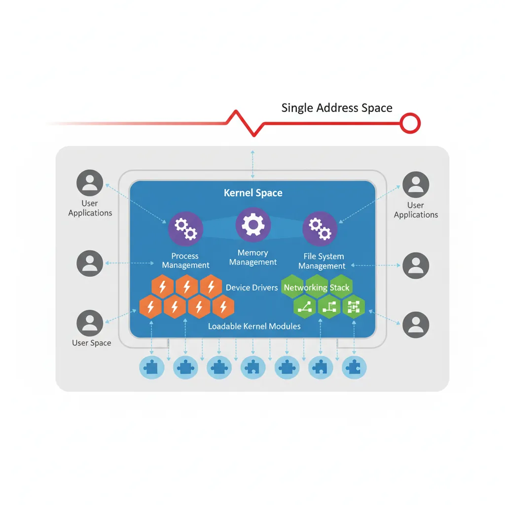

The Linux kernel is a complex piece of software managing hardware resources, processes, memory, and I/O. Understanding its internals is essential for system programmers and performance engineers.
Series Context: This is Part 22 of 24 in the Computer Architecture & Operating Systems Mastery series. We explore the Linux kernel's internal structure and debugging tools.
Under the Hood: The Linux kernel is ~30 million lines of code managing hardware from embedded devices to supercomputers. How is it organized, and how do we debug it when things go wrong?
Linux Kernel Architecture
Linux is a monolithic kernel—all core services run in kernel space. But it's modular, with loadable kernel modules.

Linux monolithic kernel architecture — all core services run in a single address space with loadable module support
Module Entry Points: Every module has module_init() (called on load) and module_exit() (called on unload). Modules export symbols that other modules can use.
proc & sysfs
/proc and /sys are virtual filesystems exposing kernel data structures.
# /proc - Process and kernel information
$ cat /proc/cpuinfo # CPU details
$ cat /proc/meminfo # Memory statistics
$ cat /proc/interrupts # Interrupt counts
$ cat /proc/1234/maps # Memory map of PID 1234
$ cat /proc/1234/fd/ # Open file descriptors
# /sys - Kernel object hierarchy
$ ls /sys/class/net/ # Network interfaces
$ cat /sys/block/sda/queue/scheduler # I/O scheduler
$ echo 1 > /sys/class/leds/input0::capslock/brightness
# Tunable parameters via /proc/sys
$ cat /proc/sys/vm/swappiness
60
$ echo 10 | sudo tee /proc/sys/vm/swappiness # Less swappy
Kernel Debugging
Debugging kernel code is challenging—there's no debugger running underneath!
eBPF Safety: The verifier ensures BPF programs terminate (bounded loops), don't access invalid memory, and don't crash the kernel. But they run with kernel privileges—loading requires CAP_BPF.
Conclusion & Next Steps
The Linux kernel is a masterpiece of systems engineering. We've covered:
Architecture: Source tree organization and subsystems
Subsystems: Scheduler, memory, VFS, networking
Modules: Loadable kernel modules (LKMs)
proc & sysfs: Virtual filesystems for introspection
Debugging: printk, dmesg, KGDB, sanitizers
Tracing: perf, ftrace, trace-cmd
eBPF: Safe kernel programmability
Key Insight: eBPF is transforming Linux—enabling safe, dynamic extension of the kernel for networking, security, and observability without modifying kernel source or loading traditional modules.